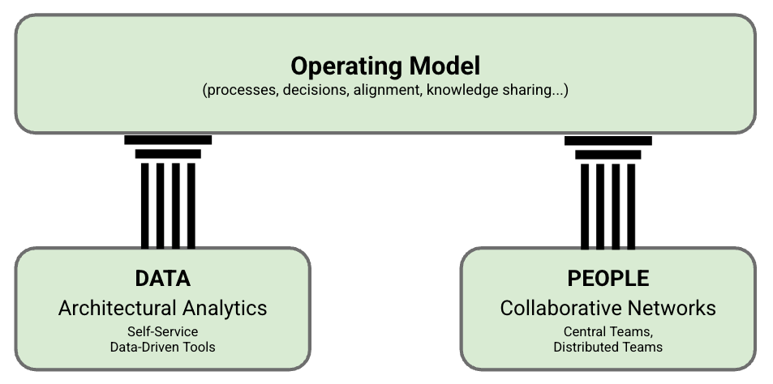

Grounded Architecture Framework: Introduction
IN THIS SECTION, YOU WILL: Get an overview of the Grounded Architecture framework: Architectural Analytics, Collaborative Networks, and Operating Model.
KEY POINTS:
- I introduce three elements of Grounded Architecture Framework: Architectural Analytics, Collaborative Networks, and The Operating Model as an approach to setting organizational structures for a modern IT architecture practice.
- Prioritizing people interactions and data over processes and tools, Grounded Architecture aims to connect an architecture practice to all organizational levels as an antidote to the “ivory tower” architecture.
In this part, I will briefly introduce the Grounded Architecture framework. I chose the term “Grounded Architecture” to highlight that the primary goal of my approach is avoid having an “ivory tower” an architecture practice disconnected from the organization. This disconnection is a real danger in a fast-moving, global, and diverse setting.
The Grounded Architecture framework is designed to be a practical solution. It aims to be deeply rooted in the organization, prioritizing people’s interactions and data over processes and tools. The goal is to connect an architecture practice to all parts and levels of the organization, serving as a practical antidote to the ‘ivory tower’ architecture. In this part of the ebook, I will delve into the framework’s structure and how it can be applied in real-world scenarios.
Grounded Architecture framework is an approach to setting organizational structures for an architecture practice, and it has three elements:
- Architectural Analytics,
- Collaborative Networks,
- The Operating Model.

Figure 1: The Grounded Architecture framework.
Architectural Analytics is a system of tools and resources that enables architects to make data-informed decisions based on a real-time and complete overview of the organization’s technology landscape. Architectural Analytics section provides more details.
Collaborative Networks connect all the people doing architecture across the organization. Thse networks are crucial to ensure that an architecture practice has any tangible impact. The Collaborative Networks section provides more details.
Lastly, the Operating Model defines a set of processes and agreements enabling architects to do everything that an architecture practice typically does, leveraging Architectural Analytics and Collaborative Networks to create a data-informed, organization-wide impact. The Operating Model section provides more details on the Operating Model.
I want to emphasize that, in my view, any operating model is only relevant if there are healthy Architectural Analytics and Collaborative Networks. Without data and people connections, an operating model leads to an ivory tower institution, generating opinion-based decisions disconnected from reality.
Now that we’ve completed the high-level Grounded Architecture tour let’s examine the specifics.
Introduction ← Goals: Adapting, Growing, and Using Data |
Grounded Architecture Framework Architectural Analytics → |